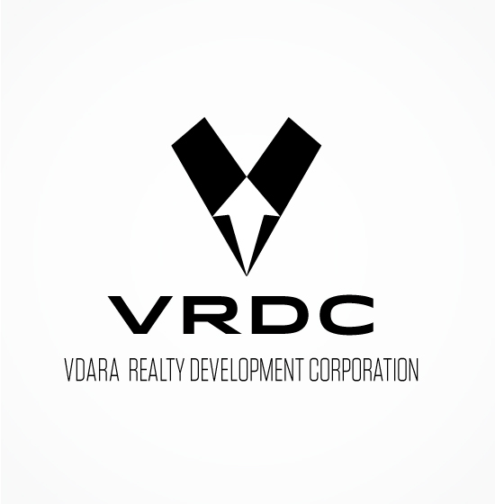

The previous logo looked polished. It was simple, concise and straight to the point, but it wasn't really complete. It lacked something I just couldn't figure out until I read this:
"..representation of the four families that came together to build the corporation."
The phrase really resonated with me. So, I sought out a solution to incorporate this statement into the new identity while still retaining the brick by brick concept and omitting the downward arrow while still keeping in mind to include a symbol for progress.
I feel that this new logotype now represents an excellent harmony with both characteristics from the previous logo and the addition of a new elements. Keeping in mind that it has to complement with the chosen typeface as well.